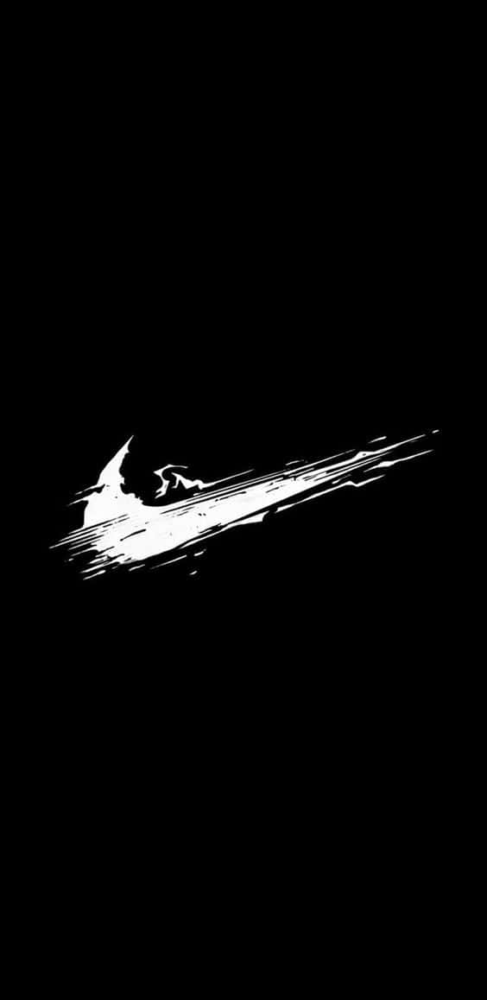
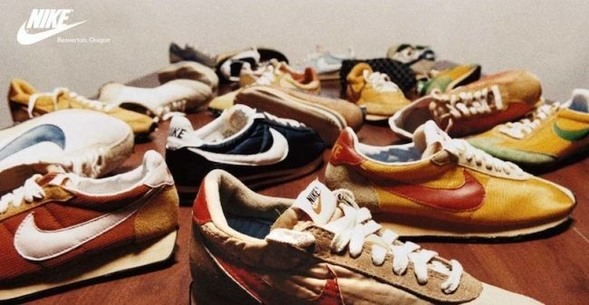

A Nike, fundada por Bill Bowerman e Phil Knight, tem sede em Beaverton, Oregon, Estados Unidos. A empresa recebeu primeiramente, em 1964, o nome de Blue Ribbon Sports. Porém, em 1971, foi renomeada para Nike, Inc. Atualmente, a empresa é responsável pelo design, fabricação, marketing e venda de calçados, roupas, acessórios e equipamentos esportivos, destacando-se como uma das companhias mais valiosas do setor. A expansão da Nike teve início em 1978, quando a companhia começou suas operações na América do Sul e na Europa. No mesmo ano, a empresa desenvolveu o departamento de futebol, investindo em marketing esportivo com diversos atletas. Em 1980, a Nike criou o seu primeiro laboratório de pesquisa, segmento da empresa responsável por análises e testes de ergonomia e biomecânica para o desenvolvimento de novos produtos. Além disso, para o seu crescimento e diversificação na linha de produtos, vale destacar que a Nike também fez importantes aquisições. Cole Haan, Converse Inc, Canstar Sports Inc e Umbro são algumas das empresas adquiridas ao longo do tempo. No Brasil, a companhia chegou em 1988, com o consagrado slogan "Just do it". Mas só em 2008 foi inaugurada a sua primeira loja própria, em território nacional.
De acordo com a empresa, a missão da Nike é "trazer inspiração e inovação para cada atleta do mundo". Para isso, por meio dos seus produtos e serviços, a marca visa oferecer experiências positivas para os atletas de hoje, enquanto busca desenvolver melhorias para as próximas gerações.

Quando Jordan estava entrando em seu ano de estreia em 1984, ele foi abordado pela Adidas, Converse e Nike para assinar um contrato de calçados. A Nike comprometeu um encontro convincente com Jordan, exibindo um "vídeo de destaque das várias enterradas e movimentos antigravitacionais de Jordan, marcados para a música pop de 1984 "Jump", das The Pointer Sisters, além de fornecer o primeiro design do tênis para mostrar a ele. Jordan criticou o sapato por suas colorações, no entanto, a Nike colocou sua opinião e críticas em grande consideração para criar uma marca que representasse a identidade de Jordan como uma peça e criar seu "verdadeiro sapato de assinatura". Embora Jordan tivesse muitas ofertas, a Nike era a única determinada a fazer de Jordan "uma estrela autônoma e dar a ele uma linha de calçados exclusiva", outras empresas o viam como uma figura que poderiam usar. Por fim, em 26 de outubro de 1984, Michael Jordan assinou um contrato de cinco anos, US$2.5 milhões com a Nike, três vezes mais do que qualquer outro negó coloca o seu nome la em cimacio na National Basketball Association (NBA) naquela época. A Nike lançou a linha de tênis Air Jordan em abril de 1985 com o objetivo de levantar US$3 milhões nos primeiros três anos. As vendas superaram em muito as expectativas, levantando US$126 milhões em um ano.

A política da NBA afirmava que os tênis deveriam ser 51% brancos e de acordo com os tênis que o restante do time usava. O não cumprimento dessa política resultou em uma multa de US$ 5.000 por jogo. A Nike projetou o Air Jordan I com base nas cores do Chicago Bull, vermelho e preto, e apenas 23% de branco, o que era uma violação dessa política. A empresa concordou em pagar cada multa, o que acabou gerando muita polêmica, mas também ganhou muita publicidade ao tênis. Com as multas que a NBA aplicou a Jordan por usar os tênis, deu um traço único ao que as pessoas associavam a eles, como inovador, pois quebrou as regras da NBA. Eles também aproveitaram essa oportunidade de marketing com o anúncio "Banned" do Air Jordan I, que afirmava "Em 15 de outubro, a Nike criou um novo tênis de basquete revolucionário. Em 18 de outubro, a NBA os expulsou do jogo. Felizmente, a NBA não pode impedir você de usá-los. Air Jordan. Da Nike. O calçado acabou vendendo 50.000 pares e gerou mais de US$ 50 milhões em vendas.
Nike é uma empresa que tem como objetivo levar o esporte para todos os lugares, mas os valores são altos mas a qualidade tambem é alta. com tenis de alta resistencia, com tecnologia e com um design que é bem bonitinho. A fabricante de artigos esportivos Nike registrou um lucro de US$ 1,16 bilhão no segundo trimestre fiscal de 2025, encerrado em 30 de novembro de 2024, uma queda de 26% na comparação anual. Diluído por ação, o lucro caiu de US$ 1,04 para US$ 0,78, acima dos US$ 0,63 estimados pelo mercado americano.
clique aqui e veja nossas camisetas